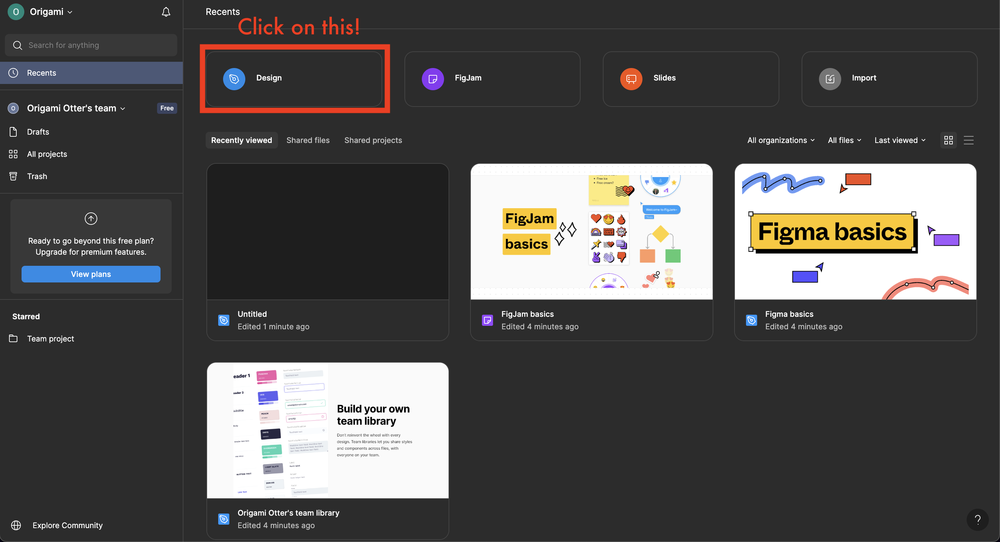
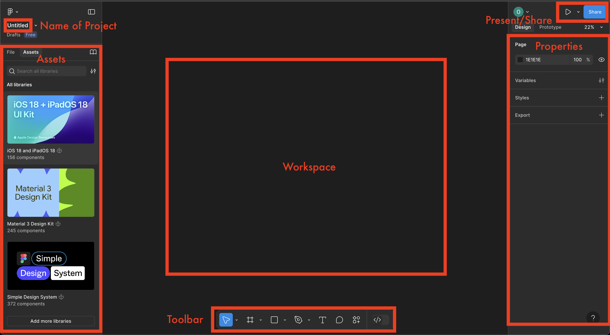
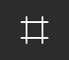
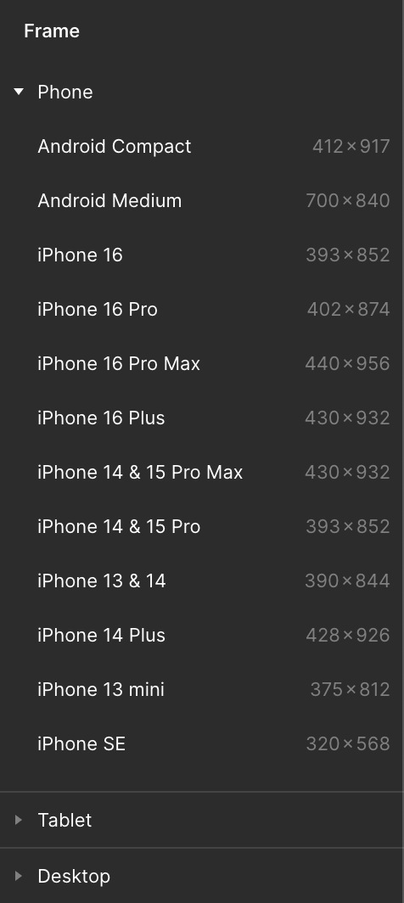
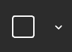
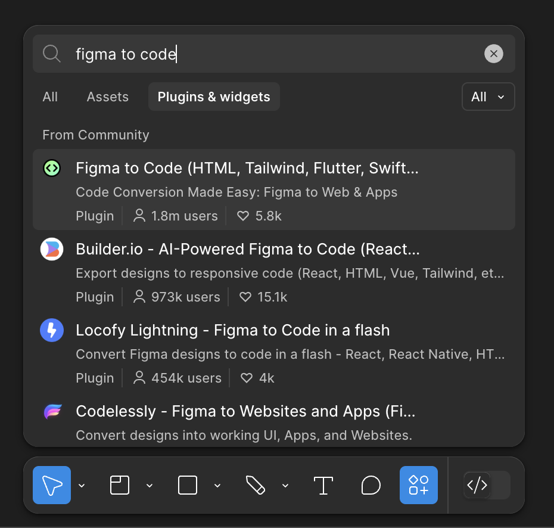

Table of contents
- What is Figma?
- Getting Started with Figma
- Interface Overview
- Core Figma Tools
- Plugin: Figma to Code
- Inspiration
What is Figma?
Figma is a browser-based design tool used for UI/UX design, wireframing, prototyping, and collaboration. Think of it as your digital whiteboard that you can use to design your website. It’s also collaborative, meaning you can work with teammates in real-time just like Google Docs! For hackathons, this is especially useful because it gives everyone a clear idea of what your project will look like, and it can be used during your presentation if you are unable to finish all of your code.
- Cross-platform: Runs in the browser, so it works on Windows, macOS, Linux, etc.
- Design + Prototype: You can design static UI and also bring it to life with clickable prototypes.
- Collaborative: Share a Figma file and allow others to view, comment, or edit live.
Getting Started with Figma
Creating a File
To start designing:
- Go to https://www.figma.com
- Log in or sign up.
- Go through the prompts. Choose the starter plan when it asks.
- Create a design file (see image below).

Interface Overview
When you open a file, you’ll see:
- Name of Project (Left) – self-explanatory, can change
- File/Assets Panel (Left) – a list of all your files and elements
- Workspace (Center) – the design area, where you will be adding objects to
- Toolbar (Bottom) – where you can add frames, shapes, images, text, comments, etc
- Present/Share (Top Right) – where you can preview your designs and add your teammates as editors
- Properties Panel (Right) – shows settings for selected objects (like color, size, and positioning)

Core Figma Tools
Frames
Frames represent your screen. Whenever you navigate to a new page, you want to create a new screen for it. You can think of frames like your canvas that you will be using to design your project.
To create a frame:
- Select the frame tool from the toolbar (shortcut:
F)

- Choose a frame on the right (properties panel). You may want to expand the Tablet and Desktop categories.
- You can also use your own dimensions by doing the following:
- Click the frame tool in toolbar
- Click in your workspace
- Change dimensions under layout section in properties panel
- You can also use your own dimensions by doing the following:

Shapes
You will want to add shapes to your design to represent elements like your buttons and containers.
To add shapes like rectangles, cards, or containers:
- Select a shape by clicking the triangle next to the shape icon in the toolbar
- Click anywhere in your workspace, or click and drag
- Drag the shape to wherever you'd like! You can also edit its properties (like color) in the properties panel on the right
Here are some shortcuts (type the letter, then click in your workspace):
- Rectangle (
R) - Line (
L) - Arrow (
Shift + L) - Ellipse - aka a circle or oval (
O)

Text
Text can be pretty important in your website design, especially trying to figure out which fonts work best.
To add text:
- Click on the text icon in the toolbar
- Adjust font, size, weight, and alignment in the properties panel on the right
- Shortcut: Press
T
Flow
Have multiple pages? How do those pages connect? In Figma, you can connect the pages together so that you have a working demonstration of how your app is supposed to behave. For example, you can make a button on one page, and when it is clicked, it will lead to another page.
To add flow:
- Click the element that will lead to your next page
- Click on the prototype tab in the properties panel
- Add a new interaction by clicking the + next to interaction
- Change the trigger and action as necessary
- For action, you will normally choose “Navigate to,” then select your destination page
- Click on the present button above the properties panel to make sure it works!
Plugin: Figma to Code
A plugin is a small add-on that gives a program extra features it didn’t have before. Figma has various plugins you can choose from, such as the Figma to Code plugins, which can convert your figma design into HTML and CSS. The image below shows how you can add plugins to your Figma project.

Inspiration
You don't have to start from scratch to create your designs! You can take inspiration from other designs.
One resource is: Figma's Community Website Templates